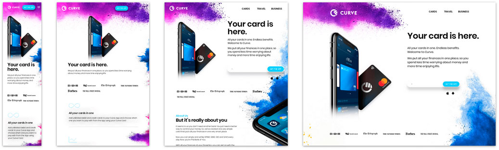

Media query's
En desarrollo web, las media queries son un módulo CSS3 que permite adaptar la representación del contenido a características del dispositivo como la resolución de pantalla (por ejemplo, un smartphone frente a pantallas de alta definición) o la presencia de características de accesibilidad como el braille.
Se utilizan para :
* Aplicar estilos condicionales con las reglas-at @media e @import de CSS.
* Indicar medios específicos en los elementos y otros elementos HTML.
* Testear y monitorizar los estados de los medios usando los métodos de javascript Window.matchMedia() y MediaQueryList.addListener().
Syntaxis
Las media queries consisten de un tipo de medio opcional y una o más expresiones de características de medios.
El resultado de la consulta es "verdadero" cuando el tipo de medio (si se especifica) coincide con el dispositivo en el que
se está mostrando el documento y todas las expresiones en el media query son "verdaderas". En este caso, se aplica los estilos correspondientes, siguiendo las reglas usuales de cascada.
Media Types
Los Media Types (tipos de medios) describen la categoría general de un dispositivo. Excepto cuando se utilizan los operadores lógicos not o only, el tipo de medio es opcional y será interpretada como all.
- all
Apto para todos los dispositivos.- screen
Destinado principalmente a las pantallas.- speech
Destinado a sintetizadores de voz.Funciones de Medios
Las funciones de medios o Media Features son las características específicas que otorgamos a cada user-agent, navegador o dispositivo de salida. Aunque algunas de las que vamos a enumerar ya están obsoletas, las más importantes son:
- witdth
Ancho de la ventana de visualización.- height
Alto de la ventana de visualización- aspect-ratio
Relación de aspecto ancho/alto de la ventana de visualización.- resolution
Densidad de píxeles del dispositivo de salida.- scan
Proceso de escaneado del dispositivo de salida.– grid
¿Utiliza el dispositivo una pantalla de cuadrícula o mapa de bits?– update
¿Con qué frecuencia el dispositivo de salida puede modificar la apariencia del contenido?– overflow-block
¿Cómo maneja el dispositivo de salida el contenido que desborda la vista a lo largo del eje del bloque?– overflow-inline
¿Se puede desplazar el contenido que desborda la ventana de visualización a lo largo del eje en línea?– color
Número de bits por componente de color del dispositivo de salida, o cero si el dispositivo no es de color.– color-gamut
Rango aproximado de colores que son soportados por el user-agent y el dispositivo de salida.– color-index
Número de entradas en la tabla de búsqueda de color del dispositivo de salida, o cero si el dispositivo no utiliza dicha tabla.– display-mode
El modo de visualización de la aplicación.– monochrome
: Bits por píxel en el búfer de fotogramas monocromo del dispositivo de salida, o cero si el dispositivo no es monocromo.– inverted-colors
¿Está invirtiendo colores el agente de usuario o el sistema operativo subyacente?– pointer
¿Es el mecanismo de entrada principal un dispositivo señalador y, de ser así, cuán preciso es?– hover
¿El mecanismo de entrada principal permite al usuario pasar el ratón por encima de los elementos?– any-pointer
¿Es cualquier mecanismo de entrada disponible un dispositivo señalador y, de ser así, cuán preciso es?– any-hover
¿Hay algún mecanismo de entrada disponible que permita al usuario pasar el ratón por encima de los elementos?– light-level
Nivel de luz del entorno.– prefers-reduced-motion
> El usuario prefiere menos movimiento en la página.– prefers-reduced-transparency
El usuario prefiere una transparencia reducida.– prefers-contrast
Detecta si el usuario ha solicitado que el sistema aumente o disminuya la cantidad de contraste entre los colores adyacentes.– prefers-color-scheme
Detecta si el usuario prefiere un esquema de color claro u oscuro.– forced-colors
: Detecta si el user-agent restringe la paleta de colores.- scripting
Detecta si está disponible el scripting (es decir, JavaScript).– device-width
Ancho de la superficie de renderizado del dispositivo de salida (Obsoleto).– device-height
Altura de la superficie de renderizado del dispositivo de salida (Obsoleto).– device-aspect-ratio
: Relación de aspecto ancho/alto del dispositivo de salida (Obsoleto).- orientation
Orientación de la ventana de visualización .Las medias queries y el diseño responsive
Sin duda, el uso más frecuente las Media Queries es para realizar diseño adaptativo o responsive. El objetivo de utilizar una Media Query en una hoja de estilo CSS en nuestra página web es que se ejecute una regla o un conjunto de reglas si
se cumple una condición determinada, como puede ser el ancho máximo de pantalla.

No debemos confundir el diseño responsivo realizado mediante CSS y Media Queries con tener una versión de nuestra web para cada dispositivo. La ventaja principal de utilizar las Media Queries es que partimos de un único diseño principal
que se irá adaptando y reajustando en función del navegador, el dispositivo, la pantalla o las preferencias del usuario.
De esta manera podremos, por ejemplo, realizar un diseño que tenga una columna en dispositivos móviles, dos
columnas en tablets y tres columnas en ordenadores portátiles y de sobremesa.
En las mejores prácticas de diseño responsive se recomienda realizar una maquetación orientada al concepto Mobile First. Esto significa diseñar para
móvil antes de diseñar para escritorio o cualquier otro dispositivo (Esto hará que la página se muestre más rápido en dispositivos más pequeños).
Para ello, debemos hacer algunos cambios en nuestro CSS. En lugar de cambiar de estilo
cuando el ancho es inferior a 768px, deberíamos cambiar el diseño cuando el ancho es superior a 768px. Esto hará que nuestro diseño sea Mobile First.